:mkview、:loadviewviewoption 中配置保存选项，设置哪些需要保存abbreviations)和映射(mappings)呢？🤔abbreviations:se nu:se[t] nu[mber]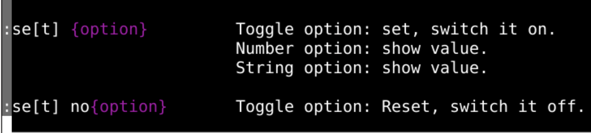
:%s:%substitute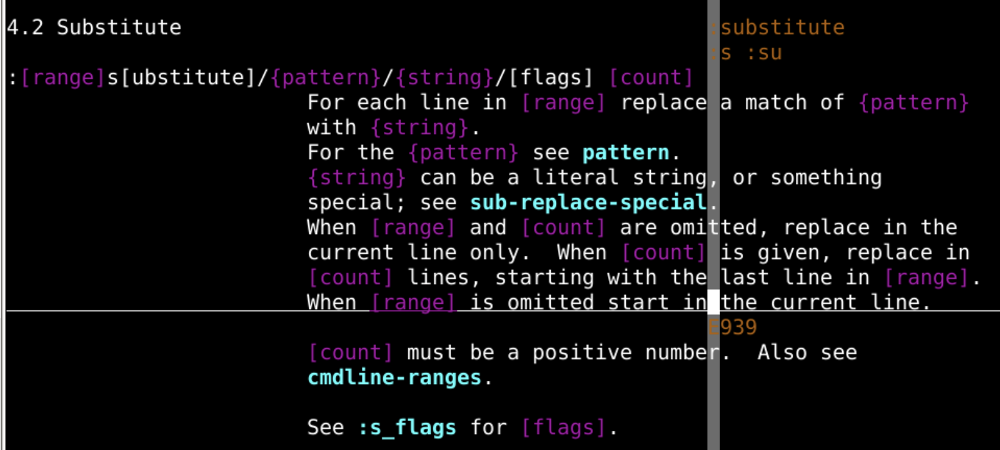
:abbreviate hi hello hi空格~/.vimrc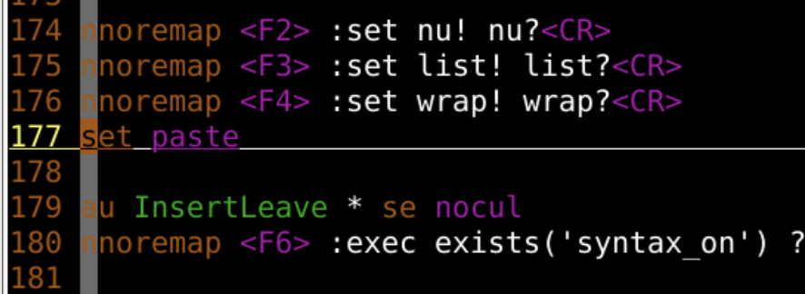
set paste 是控制粘贴用的:set paste:set nopaste:set nopaste 确保缩写可以用起来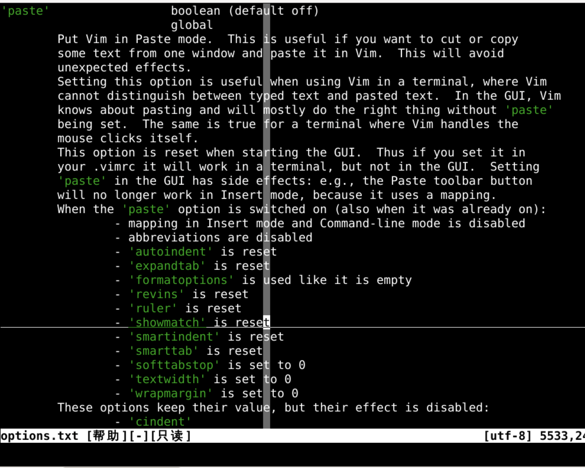
:abbreviate sml ヾ(❀╹◡╹)ﾉ~ab:ab o1z oeasy还可以用来改错
:ab teh the不论是在插入模式下，还是在命令行模式下
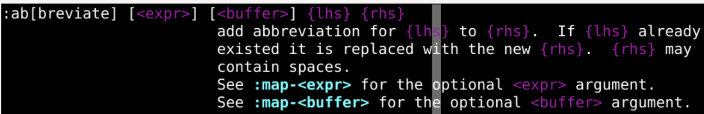
:ab sysout System.out.println();:ab sysout System.out.println("");<left><left><left>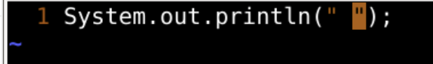
:ab htmlbase <html><cr><tab><head></head><cr><body></body><cr><backspace></html><up><right><right>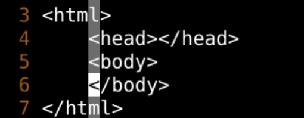
ab[breviate]可以列出所有的缩写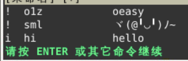
! - 全部模式包括输入和命令行i- 输入模式 insertc- 命令行模式 command:iab o1z oeasy 只在插入模式下进行缩写替换:cab o1z oeasy 只在命令模式下进行缩写替换:ab o1z oeasy 在全部模式下都能进行缩写替换:ab先看看有啥:una o1z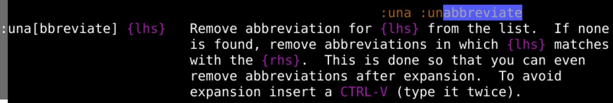
:ab 发现这个o1z已经删除了clear:iabc[lear] :cabc[lear] :abc[lear] 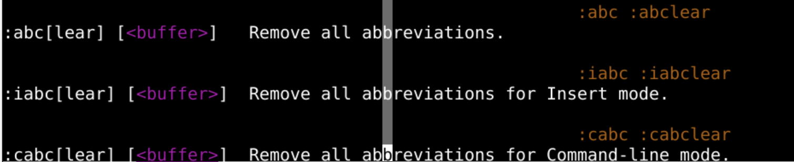
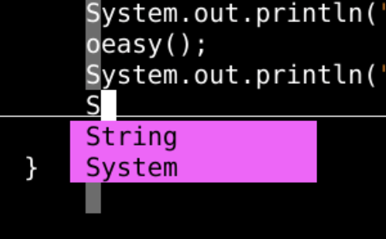
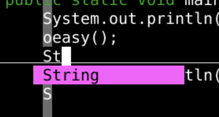
:abbrivate缩写:ab o1z oeasyiabcab:ab - 所有的:ab o1z - o1zviewoption中缩写abbreviate 还有个 映射map映射map 什么意思呢？🤔